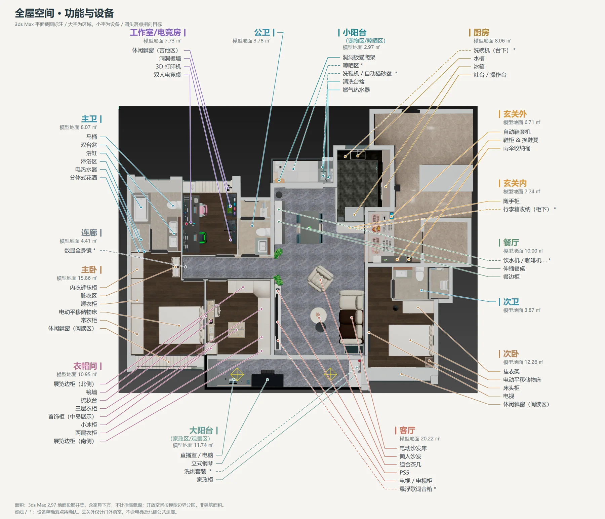

全屋装修需求
本文用于与装修公司沟通布局、定制、设备配置和水电需求。
全文所有尺寸（包括家具尺寸、柜体尺寸、安装距离及图中标注）均为参考尺寸。施工、定制、开孔和下单，以现场实地测量、实物安装要求及双方确认的最终图纸为准。
模型和效果图用于表达意向，不代替施工图；列入配置不等于已经购买。
全屋空间 · 功能 · 设备

AI + 3dsMAX 全屋功能效果巡游
1:1 尺寸还原空间与设备关系，仅体现功能需求，风格、颜色需求选购软装时定制。3dsMAX 全屋模型下载：提取码：mksv43， 解压密码为业主手机号。
全屋总体要求
- 配置原则：成品为主、局部定制。 优先选购合适的成品家具和设备；仅在现场尺寸适配、空间利用或特殊功能确有需要时做局部定制。成品可满足需求的，不默认改为定制；定制范围逐项确认、单独报价。
- 使用习惯：考虑宠物活动、防抓面料、易清洁表面、扫地机器人通行，以及父母使用的便利性。
- 收纳重点：衣物以悬挂为主，兼顾换季衣物、被褥、包包、首饰、家政工具与行李箱。
- 风格与选材：倾向现代简约风，黑白灰主色调。各区域按参考图和设备实拍核对材质、纹理及颜色；全屋统一风格与材料样板待确认。
- 保留与保护：中央空调提前做好防尘保护，施工期间不拆卸；客厅与阳台之间的墙垛、承重柱保留。现有设备、门窗及接口先盘点，再确定改造范围。
- 门窗与防盗网：全屋窗体设置隐形防盗网；大阳台封窗，非开启扇（固定玻璃部分）可不做防盗网。
- 施工配合：柜门、抽屉、设备门、窗帘和晾衣架需共同校核开启空间；管道、电箱、网箱、灯带驱动及设备接口保留检修条件。
- 数量口径：区域表列设备与使用需求；暂定、备选项目明确标注。点位数量统一见全屋水电汇总，避免分散维护导致重复计数。
- 可扩充桌面供电：电竞桌等设备数量尚不确定、后期可能扩充的桌面区域，沿使用段约每 1 m 预留 1 处插座位置，并保留改装轨道插座的安装面和电源接入条件。墙面布点与设备所需插口分别表达，不重复相加；已明确的专用设备供电仍按对应需求安排。
分空间需求索引
每个空间单独维护功能布局、硬装定制、家具设备、水电（用电设备、用水设备）、待确认事项及商品参考资料。购买链接与规格图随对应空间保存。每个空间预留效果图章节，后续将指定视角的 3ds Max 渲染图放入该空间的 renders/ 并嵌入需求说明；目前仅预留框架。
| 空间 | 需求说明 |
|---|---|
| 01 客厅 | 查看需求与家具资料 |
| 02 餐厅 | 查看需求与家具资料 |
| 03 大阳台 | 查看需求与家具资料 |
| 04 小阳台 | 查看需求与家具资料 |
| 05 厨房 | 查看需求与家具资料 |
| 06 女主衣帽间 | 查看需求与家具资料 |
| 07 男主工作室 | 查看需求与家具资料 |
| 08 主卧 | 查看需求与家具资料 |
| 09 次卧 | 查看需求与家具资料 |
| 10 卫生间（公卫、主卫、次卫） | 查看需求与家具资料 |
| 11 连廊 | 查看需求与家具资料 |
| 12 入户玄关 | 查看需求与家具资料 |
全屋水电与网络
查看分区数量汇总、计数口径和天花供电要求。每个空间的明细以该空间需求说明为准；汇总包含暂定项，需结合现场现有点位核对，不直接作为新增施工数量。
全局待确认事项
| 专项 | 待确认内容 | 对设计及报价的影响 |
|---|---|---|
| 床与智能家具 | 主卧、次卧储物床均已明确需供电，具体接口及位置待选型；智能床头柜已确认与手机充电共用电源，转角双面钟使用 5 号电池；数显镜具体供电接口 | 扣除不需市电的项，补足真实电源需求 |
| 全屋天花 | 吊顶范围、主灯 / 无主灯、灯具及灯组、开关控制 | 灯位图、控制图、驱动器和检修位置 |
| 电动窗帘 | 各开口是否电动、单双层电动、电机侧及轨道长度 | 电机与供电数量、帘盒尺寸 |
| 网络 | 已采用弱电箱 AC、各房间 AP 组网；具体位置、数量及供电方式待选型 | 预留各 AP 回程布线，核对弱电箱空间、供电和散热，不再逐区统计设备网口 |
资料入口
- 打开最新全屋模型
- 家具与设备原始资料
- 房屋实拍
- 玄关效果资料
所有商品图、规格图和购买链接仅作为选型及找同款依据；尺寸以实测和最终确认图纸为准。